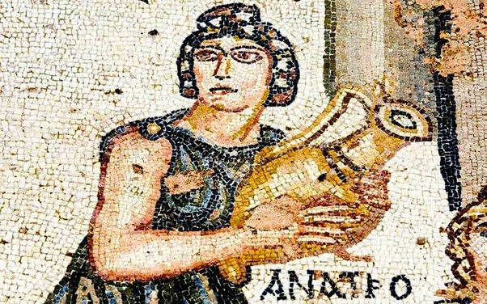
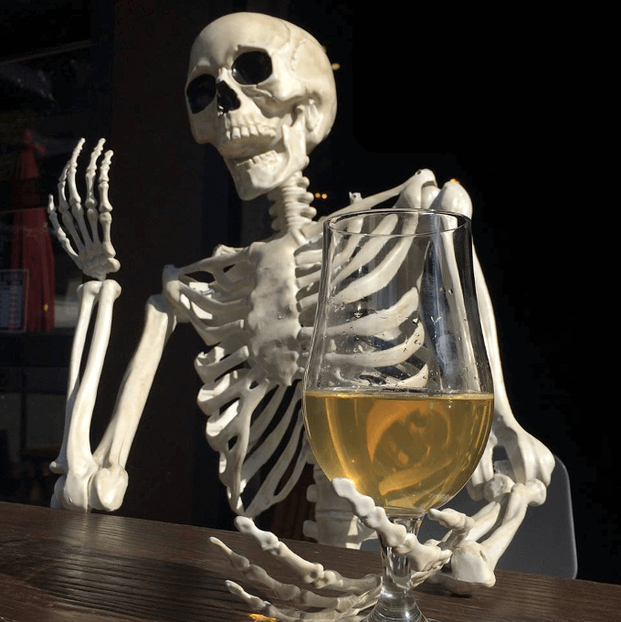
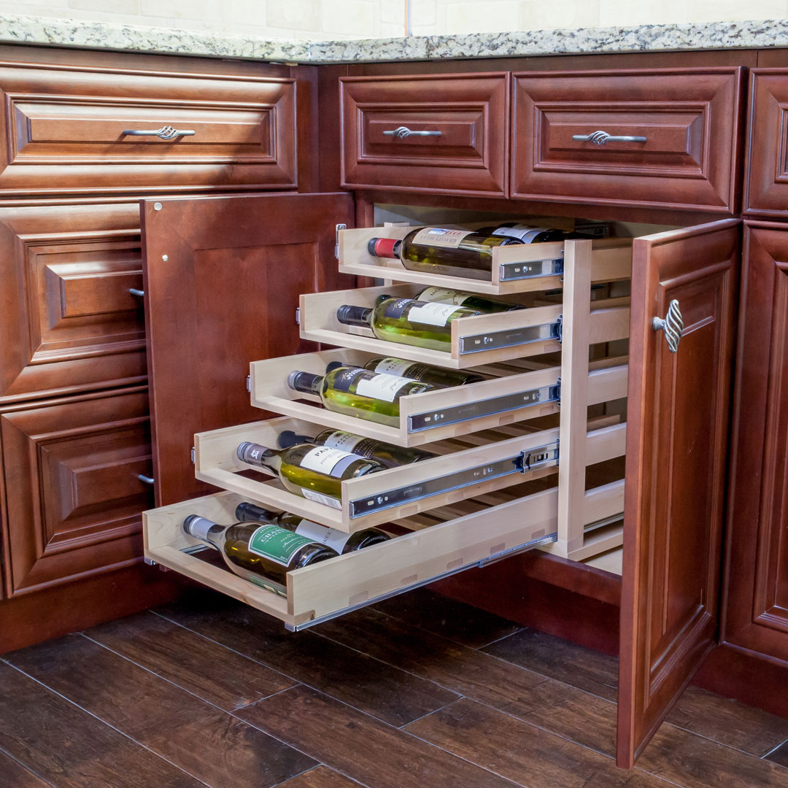

Curiosidades sobre os vinhos
Processo de Degustação
O cheiro e característica de cada tipo de uva é chamado de "aroma", o aroma completo de todo o vinho, chama-se "bouquet" e quando os experts querem falar de ambos, usam "nariz". Quando querem ficar bêbados, apenas tomam.
Benefícios à Saúde
Há estudos científicos em evolução que sugerem que beber vinho diminui o risco de ataque cardíaco, Alzheimer e derrame.
História e Curiosidades
Os romanos descobriram que misturando chumbo com vinho ajudava a manter a bebida boa por mais tempo, além de dar um gosto mais doce e certa textura. Envenenamentos crônicos por chumbo é citado até hoje como um dos componentes influenciadores na queda do império romano.
Armazenamento Adequado
O pior lugar para acondicionar o seu vinho, é, claro, a cozinha. Isso se dá pelo calor liberado pelos eletrodomésticos na mesma, forno e fogão.
Vinhos que Melhoram com a Idade
Apenas 5% de todo o vinho produzido no mundo realmente vai ficar 'melhor com a idade', 95% da produção mundial deve ser bebida dentro de 1 ano após chegarem ao mercado.
